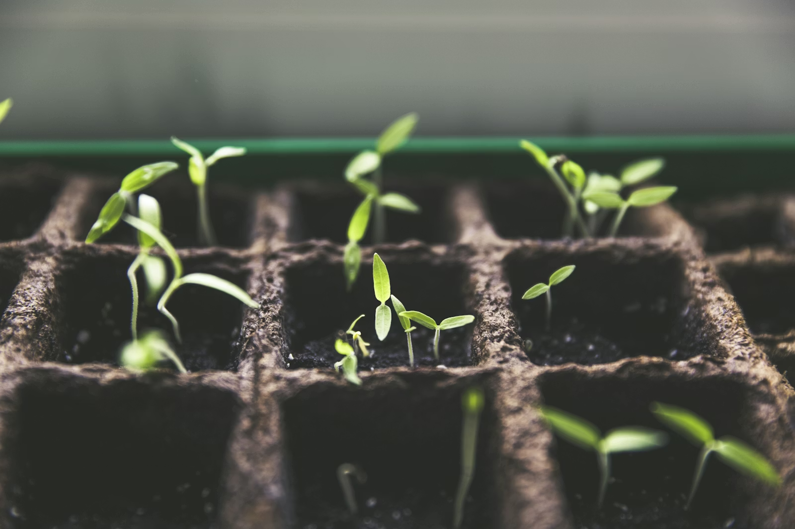
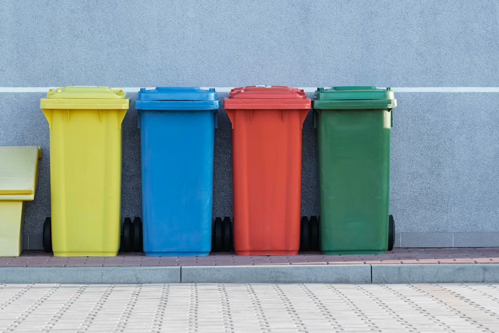
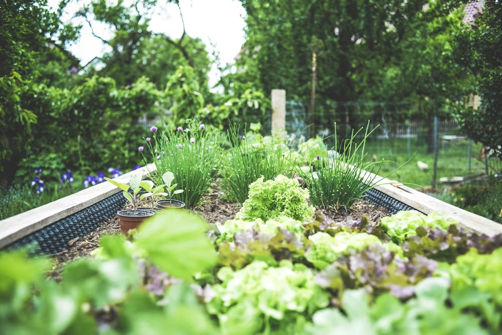
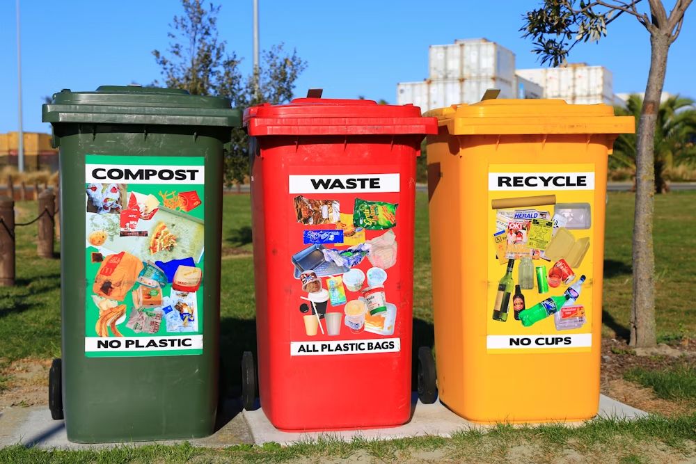
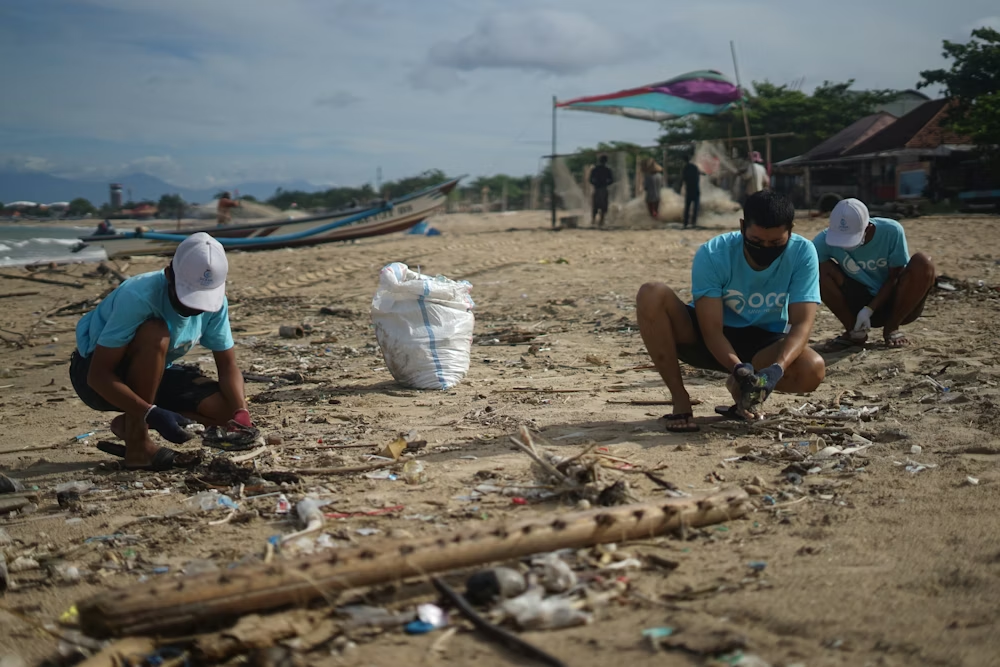
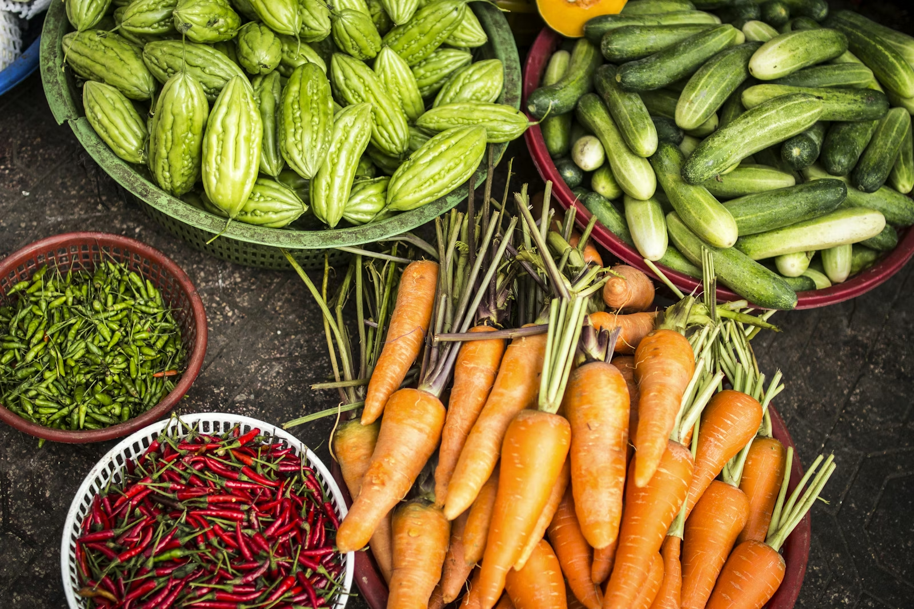

About Technology in Urban GardeningSmart Ways to Grow Plants in Small Homes
Use your phone alarm and basic tools to care for balcony plants, even on busy days.
These beginner-friendly articles explain how simple technology can help you grow plants and live greener in Pokhara.

About Technology in Urban GardeningUse your phone alarm and basic tools to care for balcony plants, even on busy days.
Low-cost timers and slow watering tools help save water and keep herbs healthy.

Negative Impact of TechnologyBuying too many new devices creates e-waste. Reuse and repair when possible.

Sustainable Gardening BoostOnline groups teach simple composting methods for city homes.

Sustainable Living Tips & TricksPrefer refill shops and paper packaging for daily products.
Local founders share how they build eco-friendly products with less plastic.

News & Environmental UpdatesNew city programs help families separate waste and shop more responsibly.

Community Stories & SuccessesA Pokhara family reduced vegetable costs by growing spinach and tomatoes on their rooftop.
This UrbanSprout Nepal project shows how a simple website can support sustainable urban living in Pokhara. The home page introduces the idea, the products page helps users explore eco-friendly items, and the blog page shares easy tips about technology, gardening, and daily green habits for beginners.
The research and about pages complete the project by explaining design decisions, team contributions, and learning outcomes from this course work. Overall, the project encourages users to start small, make responsible choices, and use practical tools to build a cleaner, healthier, and more sustainable community.
Small steps today, greener Pokhara tomorrow.